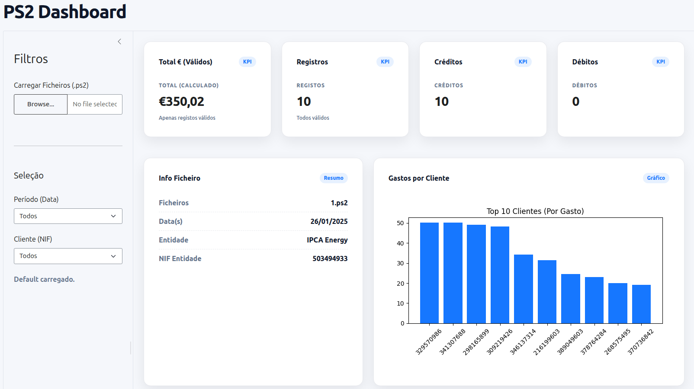
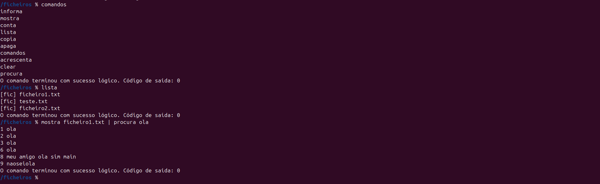

Engenharia de Sistemas Informáticos
Instituição de Ensino
2023 — Atual
Foco em desenvolvimento de software, redes, bases de dados e arquitetura de sistemas.
Engenharia de Sistemas Informáticos
Back-end, full-stack, aplicações web e DevOps.
APIs, bases de dados, Docker e JavaScript.
Foco em projetos práticos para o mercado.
Trabalhando como Suporte técnico de software e hardware.
=======Desenvolvedor back-end, full-stack, aplicações web e DevOps
APIs, bases de dados, Docker e JavaScript.
Com foco em projetos reais e funcionais para o mercado de trabalho.
Trabalhando como Suporte Técnico de Software e Hardware.
Linux e Windows
Python, C, HTML5 e CSS
Git, GitHub, Docker, Makefile
MySQL, Django e JavaScript
Pensamento crítico e adaptação.
Colaboração e respeito.
Responsabilidade e autonomia.
Clareza e escuta ativa.
=======Linux e Windows
Python, C, HTML5 e CSS
Git, GitHub, Docker, Makefile
MySQL, Django e JavaScript
>>>>>>> release/1.0.0Instituição de Ensino
2023 — Atual
Foco em desenvolvimento de software, redes, bases de dados e arquitetura de sistemas.
Plataforma de Cursos
2024
Especialização em Python, Docker e desenvolvimento web back-end.
Meus projetos para desenvolvimento pessoal

O objetivo do projeto é gerar ficheiros PS2 a partir de dados armazenados em ficheiros e, depois, analisar esses dados numa Dashboard.

Mini-sistema de gestão de ficheiros com interpretador e comandos totalmente personalizados, implementado em C puro com chamadas ao sistema POSIX.
Descrição breve do que o projeto faz, qual problema resolve e o que o torna interessante.
Descrição breve do que o projeto faz e quais tecnologias foram aplicadas.
Pequena experimentação ou aplicação prática focada em aprendizado.
Empresa ou Projeto
2024 — Atual
Autônomo
2023 — 2024
Aberto a oportunidades, colaborações e conversas sobre tecnologia. Escolha o canal que preferir.